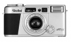
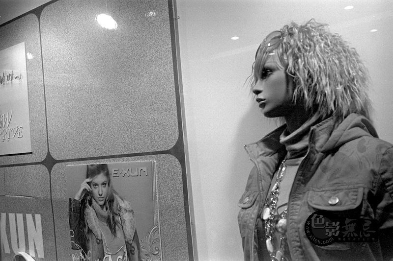

器材库 > 胶片袖珍相机（PS） > AFM 35

规格总览
发布日期
2001-08
产品类型
35mmAF袖珍照相机
使用胶卷/胶片
35mm
画幅
24×36mm
停产
是
镜头及对焦
镜头
S-Apogon HFT 38/2.6，采用了高折射指数玻璃镜片和非球面镜片，HFT多层镀膜
镜头结构
4片/3组
视角（对角）
59.3
对焦范围
0.4m至无限远
对焦模式
AF，10段MF（由转盘控制）
AF系统
精确的被动式自动对焦系统，提供AF锁定
曝光控制
测光系统
使用CdS测光元件
测光范围
4EV~16EV
曝光补偿
±0.5 或 ±1.0EV
快门
程序式电子快门
快门速度
1/2 - 1/290秒 (f/2.6)，1/1000秒 (f/16) ；B门，也可以设定1、2、4、8、15、30和60秒
胶卷感光度
DX编码自动识别：ISO 50-3200
取景规格
取景器
实像取景器，有视差补偿框
取景范围
85%
取景放大倍率
0.48倍
取景器信息
内：AEB和MF符号；外：绿色和红色LED指示AF和曝光
显示面板
拍摄张数，闪光模式，自拍，B门，包围曝光，MF，日期打印，电池状态
过片系统
胶卷安装
自动上卷
过片
自动过片
倒片
自动退片，可中途退卷
闪光灯
内置闪光灯
有
闪光指数
11
回电时间
4秒
闪光模式
自动闪光，防红眼，填充式，关断，慢速同步
其它规格
电池
1枚3V锂电池（CR2/DL 或 CR2）
材质
铝镁合金外壳
颜色
香槟色
尺寸
123 x 63 x 33.5mm
重量
250g
哈斯2014-06-23 20:334.75 分
操作性 5.00功能性 4.50美观性 5.00趣味性 5.00耐用性 4.00性价比 5.00
老刺猬2008-03-27 00:084.33 分
操作性 4.00功能性 4.00美观性 3.50趣味性 4.50耐用性 5.00性价比 5.00
suede882008-02-07 11:553.25 分
操作性 4.00功能性 3.50美观性 4.00趣味性 4.00耐用性 3.50性价比 0.50
展眉2007-04-19 17:254.75 分
操作性 5.00功能性 4.50美观性 5.00趣味性 4.50耐用性 4.50性价比 5.00
ggcloud2007-04-06 17:174.58 分
操作性 4.00功能性 4.50美观性 5.00趣味性 4.50耐用性 4.50性价比 5.00

Sino2007-02-18 11:484.5 分
操作性 4.00功能性 4.50美观性 4.50趣味性 4.00耐用性 5.00性价比 5.00
沽清猪扒包2006-10-10 12:304.08 分
操作性 3.50功能性 4.50美观性 4.00趣味性 4.00耐用性 4.00性价比 4.50
abcpaulabc2006-09-05 00:434.58 分
操作性 4.00功能性 4.50美观性 5.00趣味性 4.50耐用性 4.50性价比 5.00
pocket2006-02-13 00:204.08 分
操作性 3.50功能性 4.00美观性 4.50趣味性 4.00耐用性 4.00性价比 4.50
子非鱼2005-11-12 00:443.75 分
操作性 3.50功能性 3.50美观性 3.50趣味性 3.50耐用性 3.50性价比 5.00
产品图 / 样片
禄来 AFM 35
评测 / 相关文章
该产品暂无存档的评测文章